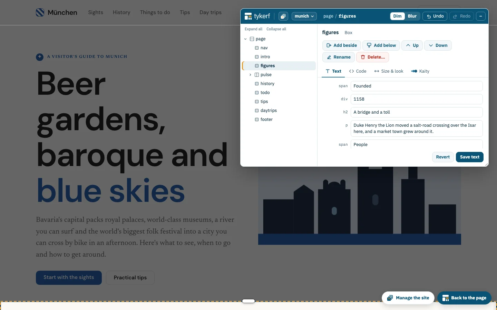
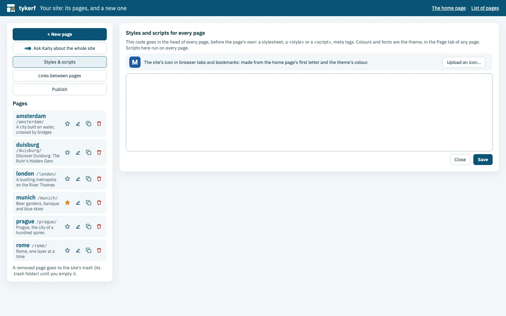
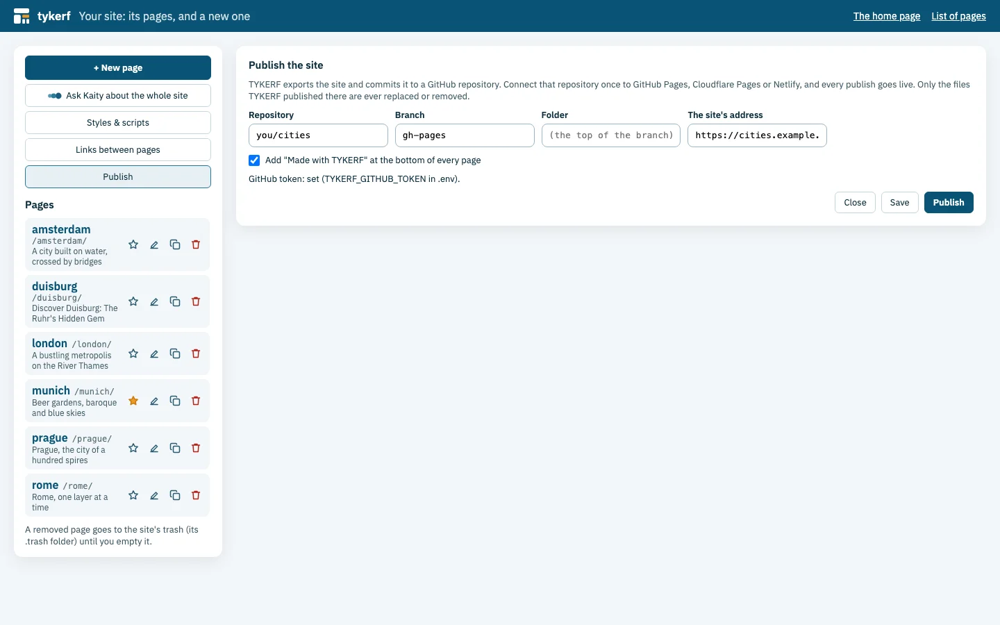

01Point
Click anything on the page.
A title, a button, an illustration. The task stays on that exact element as a numbered tab, with the width of the window where you saw the problem.
Web pages · Open source · early access
TYKERF makes complex web pages understandable and editable. A page is cut into rows and columns, down to named blocks of ordinary HTML. Every change is a validated move on that tree, and every move can be undone.
Point at anything, leave Kaity a task, and give her all your tasks when you are ready. She can only change the block she is given.
I can change hero: split it, move it, resize it or rewrite it. The rest of the page stays as it is.
See it in 3 minutes
On the start screen, one sentence asks for a joyful page about Lisbon. Kaity builds it step by step, with facts, trivia, games and illustrations, and looks at her work at desktop and phone widths.
Tasks
The editor starts in the Tasks mode. Click what you would change, write a line, and when you have them all, hand them over in one go. Here, two loose tasks on a page about London: “make the illustration more colorful” and “add something about The Shard”.
A title, a button, an illustration. The task stays on that exact element as a numbered tab, with the width of the window where you saw the problem.
As loose as “make the illustration more colorful” or as exact as “make the title six words at most”. Leave as many as you like, for yourself, a colleague or Kaity.
She works through them while you watch, answers each one and says what she checked. Every step can be undone. Copy all gives the tasks as text for any other AI agent.
Three ways to start a site
However a page starts, it ends up as the same tree of named blocks, ready to edit by hand or with Kaity.
Write a sentence, or drop a screenshot, a sketch or a mock-up. Kaity picks a layout and a theme and builds the page while you watch.
TYKERF copies a page into named blocks, bringing its images and fonts along. Publish a copy only with its owner’s permission.
Start from a modern page layout and a theme preset, then change anything, block by block, or ask Kaity to fill it in.
From a page to a site
The tree makes a complex page readable. Validated moves mean the layout can’t be left broken, and the history keeps every step.

01Open the page and press Edit with TYKERF. It starts in the Tasks mode; switch to Edit for exact control. A floating panel shows the tree: select a block on the page or in the tree and edit its text, its code or its size, or talk to Kaity about it.
Tasks and Edit over the page
02The site manager lists the pages and the links between them, broken ones first, with the code every page shares and the site’s icon. All the pages of a site share one theme.
Pages, links and shared code
03Send the site to a GitHub repository served by GitHub Pages, Cloudflare Pages or Netlify, one commit per publish. Or export a .zip, or let TYKERF serve the site with a sign-in to edit it.
GitHub · Cloudflare · Netlify · .zipYour AI, your tools
TYKERF runs on your computer with Claude Code, or with an Anthropic, Anthropic-compatible or Gemini API key. Its MCP server offers the same moves to Claude Desktop, Claude Code, Cowork and other MCP clients, which can read the tasks you left and close them with a reply. In Claude Code and Cowork it comes as a plugin, from TYKERF's own marketplace.
Read the developer guide# Node.js 22 or later, in a clone of the repository
npm install
npx playwright install chromium
npm start -- my-site# Node.js 20 or later; or /plugin in a session
claude plugin marketplace add eonity-org/tykerf
claude plugin install tykerf@eonity.orgBuilt in the open
TYKERF borrows the slicing floorplans of chip design and turns them into a shared language for people and AI. Its TY connects it to the Eonity family, next to TYDAL and the coming TYSET.
TYKERF is available under the Apache License 2.0.
Read the user guide